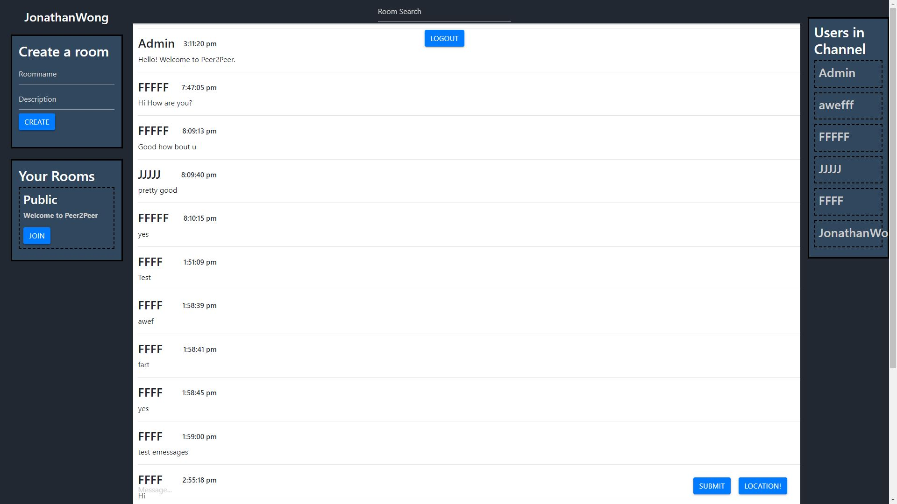

Peer2Peer

Role: Developer
Team: Solo
Timeline: July 2019 - Present
Technologies: MongoDB, Express.js, React, Node.js, Socket.IO, Redux, Bootstrap, Postman, MongoDB Atlas
About:
Peer2Peer is a web application I built using the MERN stack, along with other JavaScript libraries. Throughout this project,
I learned more about authentication and authorization through the use of JSON Web Tokens, hashing passwords, and storing them safely
within a secure database which was hosted online using MongoDB Atlas. The application allows for real time message sending automatically
updating on the client's screen allowing for a seamless user experience which was integrated with Socket.IO and CRUD methods.